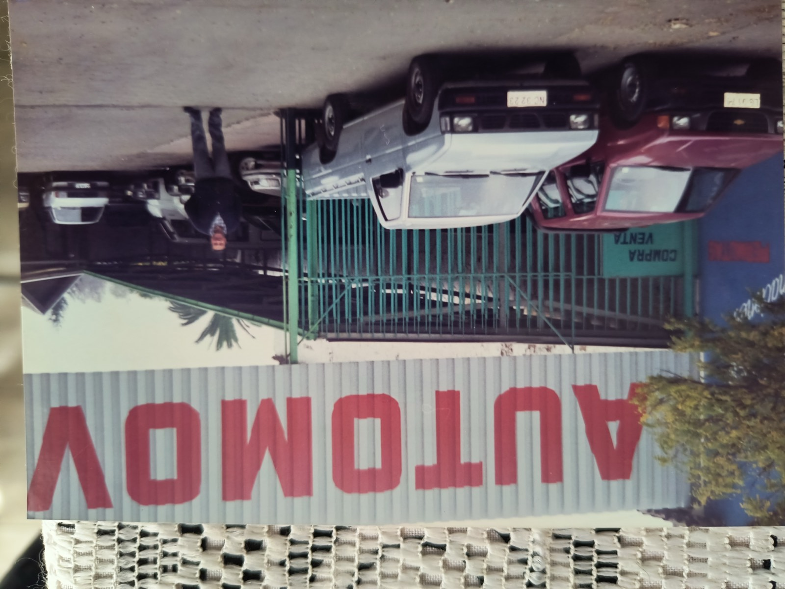
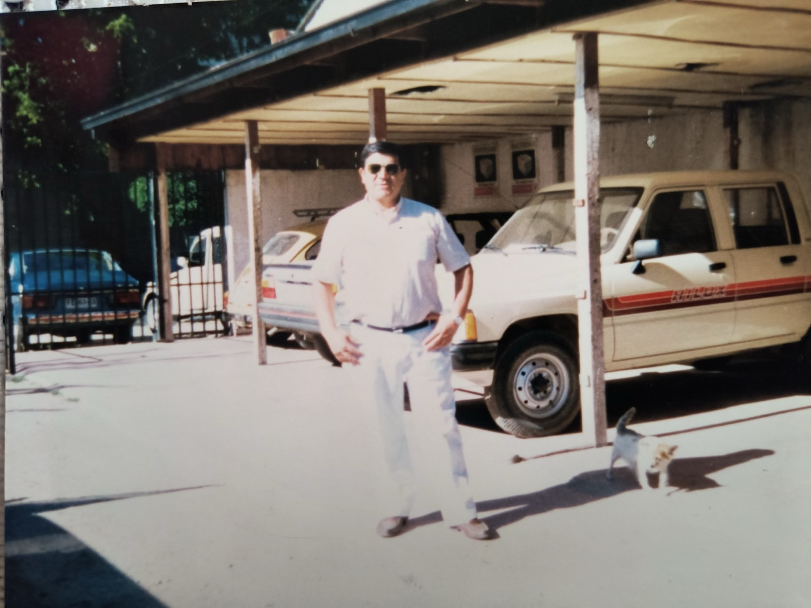
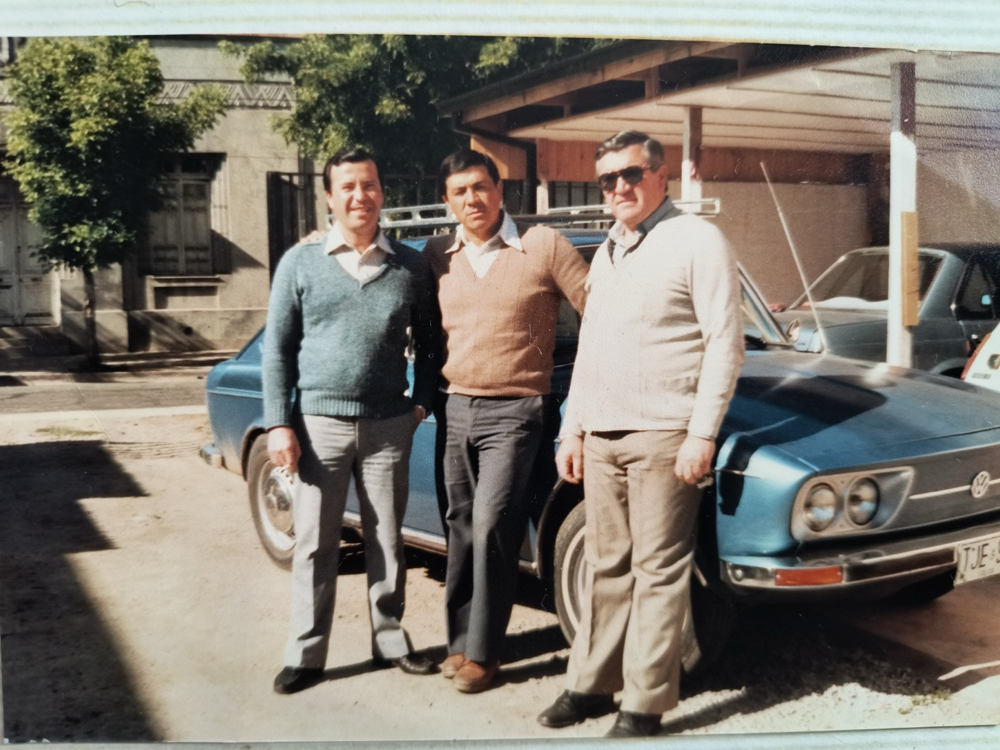

Tasación justa
Revisamos tu vehículo y te damos un precio real de mercado, sin letra chica.
1 Norte 1678 · Talca, Región del Maule
La compraventa de automóviles más antigua de Talca. Más de cuatro décadas ayudando a comprar y vender vehículos con seriedad, el mismo lugar de siempre.
Vitrina
Este es nuestro inventario actual. Escríbenos por WhatsApp para coordinar una visita, revisar documentación o consultar por financiamiento.
No tenemos vehículos de este tipo en este momento. Escríbenos y te avisamos cuando ingrese uno.
Por qué ROCAR
Revisamos tu vehículo y te damos un precio real de mercado, sin letra chica.
Cada auto que vendemos pasa por una revisión previa antes de salir del local.
Te acompañamos en la transferencia y el papeleo, de principio a fin.
Somos parte de Talca desde 1986. Muchos clientes ya son la segunda generación.
Nuestra historia
ROCAR nació en 1986 de la mano de Héctor Rodrigo Cáceres Cornejo, en el mismo terreno de 1 Norte 1678 donde seguimos atendiendo hoy. Lo que comenzó como un pequeño patio de autos se convirtió, con los años, en la compraventa de automóviles más antigua de Talca.
Durante más de 40 años hemos visto pasar generaciones de familias talquinas: personas que compraron su primer auto con nosotros y que, años después, volvieron para vender ese mismo auto o comprar el siguiente. Ese es el negocio que aprendimos de don Héctor Rodrigo: cada venta es, primero que todo, un trato entre personas que se conocen y confían.
Hoy seguimos en el mismo lugar, con la misma forma de trabajar: cara a cara, con honestidad y con el tiempo de por medio como garantía.



Ubicación y contacto